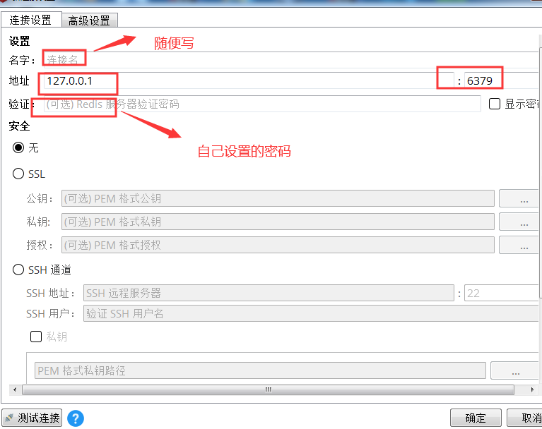

在项目中，缓存作为一种高效的提升性能的手段，几乎必不可少，Redis作为其中的佼佼者被广泛应用；
<dependency>
<groupId>org.springframework.boot</groupId>
<artifactId>spring-boot-starter-data-redis</artifactId>
</dependency>####### Redis ################
#第几个数据库，由于redis中数据库不止一个（默认会开启15个）
spring.redis.database=1
# 也可指定为127.0.0.1
spring.redis.host=localhost
spring.redis.port=6379
spring.redis.password=88888888
# springboot2.x以上如此配置，由于2.x的客户端是lettuce
# 单位要带上
spring.redis.lettuce.pool.max-active=8
spring.redis.lettuce.pool.min-idle=0
spring.redis.lettuce.pool.max-idle=8
spring.redis.lettuce.pool.max-wait=10000ms
spring.redis.lettuce.shutdown-timeout=100ms
# springboot1.x如此配置，由于1.x的客户端是jedis
#spring.redis.jedis.pool.max-active=8
#spring.redis.jedis.pool.min-idle=0
#spring.redis.jedis.pool.max-idle=8
#spring.redis.jedis.pool.max-wait=-1
#spring.redis.timeout=500这样就集成进来了，就可以使用了，有两种template可以直接使用，RedisTemplate和StringRedisTemplate，有opsForValue、opsForList、opsForSet、opsForZset、opsForHash几种访问方法，简单示例如下：
@Resource
private RedisTemplate redisTemplate;
// 写入缓存
redisTemplate.opsForValue().set("111","anson");
//读取缓存
String str = redisTemplate.opsForValue().get("111").toString();运行后可以查看到缓存中已经写入，读取也正常读取出来
<!--4、集成redis -->
<dependency>
<groupId>org.apache.commons</groupId>
<artifactId>commons-pool2</artifactId>
<version>2.4.2</version>
</dependency>
<!-- redis依赖，2.0以上使用这个依赖 -->
<dependency>
<groupId>org.springframework.boot</groupId>
<artifactId>spring-boot-starter-data-redis</artifactId>
</dependency>
<!-- 缓存依赖 -->
<dependency>
<groupId>org.springframework.boot</groupId>
<artifactId>spring-boot-starter-cache</artifactId>
</dependency>####### Redis ################
#第几个数据库，由于redis中数据库不止一个
spring.redis.database=1
# 也可指定为127.0.0.1
spring.redis.host=localhost
spring.redis.port=6379
spring.redis.password=88888888
# springboot2.x以上如此配置，由于2.x的客户端是lettuce
# 单位要带上
spring.redis.lettuce.pool.max-active=8
spring.redis.lettuce.pool.min-idle=0
spring.redis.lettuce.pool.max-idle=8
spring.redis.lettuce.pool.max-wait=10000ms
spring.redis.lettuce.shutdown-timeout=100ms
# springboot1.x如此配置，由于1.x的客户端是jedis
#spring.redis.jedis.pool.max-active=8
#spring.redis.jedis.pool.min-idle=0
#spring.redis.jedis.pool.max-idle=8
#spring.redis.jedis.pool.max-wait=-1
#spring.redis.timeout=500package com.anson.config;
import org.slf4j.Logger;
import org.slf4j.LoggerFactory;
import org.springframework.cache.annotation.CachingConfigurerSupport;
import org.springframework.cache.annotation.EnableCaching;
import org.springframework.cache.interceptor.KeyGenerator;
import org.springframework.context.annotation.Bean;
import org.springframework.context.annotation.Configuration;
import org.springframework.data.redis.cache.RedisCacheConfiguration;
import org.springframework.data.redis.cache.RedisCacheManager;
import org.springframework.data.redis.connection.RedisConnectionFactory;
import org.springframework.data.redis.serializer.*;
import java.time.Duration;
/**
* @description: redis缓存配置类
* @author: anson
* @Date: 2019/12/8 21:34
*/
@Configuration
@EnableCaching
public class RedisCacheConfig extends CachingConfigurerSupport {
private static final Logger logger = LoggerFactory.getLogger(RedisCacheConfig.class);
// 自定义key生成器
@Bean
public KeyGenerator keyGenerator(){
return (o, method, params) ->{
StringBuilder sb = new StringBuilder();
sb.append(o.getClass().getName()); // 类目
sb.append(method.getName()); // 方法名
for(Object param: params){
sb.append(param.toString()); // 参数名
}
return sb.toString();
};
}
// 配置缓存管理器
@Bean
public RedisCacheManager cacheManager(RedisConnectionFactory connectionFactory) {
RedisCacheConfiguration config = RedisCacheConfiguration.defaultCacheConfig()
.entryTtl(Duration.ofSeconds(60000000)) // 60s缓存失效
// 设置key的序列化方式
.serializeKeysWith(RedisSerializationContext.SerializationPair.fromSerializer(keySerializer()))
// 设置value的序列化方式
.serializeValuesWith(RedisSerializationContext.SerializationPair.fromSerializer(valueSerializer()))
// 不缓存null值
.disableCachingNullValues();
RedisCacheManager redisCacheManager = RedisCacheManager.builder(connectionFactory)
.cacheDefaults(config)
.transactionAware()
.build();
logger.info("自定义RedisCacheManager加载完成");
return redisCacheManager;
}
// key键序列化方式
private RedisSerializer<String> keySerializer() {
return new StringRedisSerializer();
}
// value值序列化方式
private GenericJackson2JsonRedisSerializer valueSerializer(){
return new GenericJackson2JsonRedisSerializer();
// return new GenericFastJsonRedisSerializer();
}
} @Override
@Cacheable(cacheNames = "user" ,key="#id")
public User selectByPrimaryKey(Integer id)
{
return usermapper.selectByPrimaryKey(id);
}
@Override
@Cacheable(cacheNames = "users")
public List<User> getAll()
{
return usermapper.getAll();
}@Cacheable(value="cacheName", key"#id")
public User method(int id);
@Cacheable(value="cacheName", key"T(String).valueOf(#name).concat('-').concat(#password))
public User method(int name, String password);
@Cacheable(value="cacheName", key"#user.id)
public User method(User user);
@Cacheable(value="gomeo2oCache", keyGenerator = "keyGenerator")
public User method(User user);
我们 打开druid的SQL监控，然后在swagger中进行操作，在Redis desktop manager中查看Redis，就可以看到第一次查询执行了数据库查询，并把结果存进了Redis中，以后执行同样的查询，在缓存没过期之前，都直接从Redis获取，不再执行数据库查询，可见Redis缓存成功运行和释放了数据库的压力了；
下载Redis Windows版，解压后看到
先点击打开Redis-server.exe，再打开Redis-cli.exe，Redis已经以默认的方式启动起来了，其中Redis-server.exe就是Redis服务，Redis-cli.exe是客户端工具，用来以命令操作Redis的；
这时候就可以使用Redis，默认密码是空的，端口是6379；我们设置一下密码：
config set requirepass “你的密码” //设置密码
auth “你的密码” //验证密码是否成功设置
flushall ，是清除所有缓存的命令，用来清除重新测试的，
其他命令就不多介绍了，需要用到自行百度
下载安装包，安装，然后填入密码连接即可
